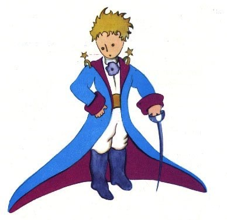

So I lived my live alone , without anyone that icould really talk to, until I had an accisident with my plane in the Desert of Saxara , six years ago . Something was broken in my engine.And as I had with me neither a mecchanic nor any passengers, I set myself to attempt the difficult repairsall alone . It was a queshion of life or dearth for me: I had scarcely
enought drinking water to last a week.
The first night, then, I went to sleep on the sand, a thousand miles from any human habitation. I was more isolated than a shipwreeked sailor on a raft in the middle of the ocean. Thus you can imagine my amazement , at surnise, when T was awakened by an odd little voice . It said:
If you please-draw me a sheep!
What!
Draw me a sheep!
I jumped to my feet, completely thunderstruck.I blinked my eyes hard . I looked carefully all around me . And I saw a most extraordinary small person, who stood there examinig me with great seriousness. Here you may see the best portrait that, later, I was able to make of him. But my drawing is certainly very much less chamming than its model.

That, however, is not my fault. The grown - ups discouraged me in my painters career when I was six years old, and I never Learned to draw anything, expert boas from the outside and boas from the inside.
Now I stared at this sudden apparition with my eyes fairly starting out of my head in astonishment. Remember, I had crashed in the desert a thousand miles from any inhabited region. And yet my little man scemed neither to be straying uncertainly among the sands, nor to be fainting from fatique or hunger of thirst or fear.Noothing about him gave any suggestion of a chld lost in the middle of the desert, a thousand miles from any human habitation. When at last I was able to speak, I said to him:
But --what are you doing here?
And in ansver be repeated, very slowly, as if he were speaking of a matter of greaat consequence:
If you please--draw me a sheep...
When u mustery is too owerpowering, one dare not disobery . Abcurd as it might seem to me , a thousand miles from any human habitation and in danger of danger of death, I took out of my posket a sheet ofpaper and my fountain-pen. But then I remembered how myy studies had been concretated on geography, history,arithmetic and grammar, and I told the little chap ( a little crossly, too) that I did not know how to draw. He answered me:
That doesn't matter. Draw me a sheep...
But I had never draw a sheep . So I drew for him one of the two pictures I had draw so often . It was that of the boa constrictor from the outside. And I was astounded to bear the little fellow greet it with:
No, no, no,! I do not want an elephant inside a boa constrictor . A boa constrictor is a very dangerous creature , and an elephant is very cumbersome. Where I live , everything is very small. Draw me a sheep .